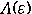
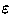
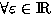

An Algorithmic Approach for the
Symmetric Perturbed Eigenvalue Problem
Application to the solution of a Schrödinger equation
by a kp-Perturbation
Method
Claude-Pierre Jeannerod (1),
Nicolas Maillard (2), and
Eckhard Pflügel (3)
(1) Claude-Pierre
Jeannerod LMC-IMAG -
(2) Nicolas Maillard
LMC-IMAG, Observatoire de Grenoble -
(3) Eckhard Pflügel LMC-IMAG
Full article postscript version
Abstract: In semi-conductor theory, applying the
kp-method to the monodimensional Schrödinger equation
leads to a symmetric perturbed eigenvalue problem [8], i.e. to the diagonalization of a
matrix 
depending on a small
parameter 
, symmetric 
. The eigenelements of are
expansions in fractional powers of (Puiseux series).
Usually, physicists solve this problem by using Schrödinger
perturbation formulas under some restrictive conditions,
which make
perturbed eigenvector symbolic approximation impossible. This is
illustrated by the modified Kane matrix [5].
To solve this problem completely
from a symbolic computing point of view, we consider the symmetric
perturbed eigenvalue problem in the case of analytic perturbations [2, 9]. We
first review the classical characteristic polynomial approach, showing
why it may be not optimal. We also present a direct matricial
algorithm [7]: transforming the analytic
matrix into its so-called
q-reduced form allows to recover the information we need for
the eigenvalues.
This alternative method, as well as the classical
one, can be described in terms of the Newton polygon. However, our
approach uses only a finite number of terms of and is
more suitable for large matrices and a low approximation order.
Besides, we show that the q-reduction process can
simultaneously provide symbolic approximations of both the perturbed
eigenvalues and eigenvectors.
The implementation of this algorithm in
MAPLE is used to diagonalize the
modified Kane matrix up to a given order.
Keywords: perturbation of eigenvalues,
symmetric analytic matrices, Newton-Puiseux polygon,
q-reduced form of a matrix depending on a parameter, MAPLE package,
Schrödinger equation, semi-conductor, kp-method, quantum well.
References:
- 1
-
J. Abdeljaoued.
The Berkowitz algorithm, Maple and computing the characteristic
polynomial in an arbitrary commutative ring.
MapleTech, 4 (3):21-32, 1997.
- 2
-
H. Baumgärtel.
Analytic perturbation theory for matrices and operators.
Birkhauser Verlag, Basel, 1985.
- 3
-
C. Cohen-Tannoudji.
Mécanique quantique, volumes I et II.
Hermann, 1973.
- 4
-
D. Duval.
Diverses questions relatives au calcul formel avec nombres
algébriques.
Thèse d'Etat, Faculté des Sciences de Grenoble, 1987.
- 5
-
G. Fishman.
Cube, Quasi-cube et Würtzite: application au GaN.
École thématique du CNRS, Montpellier, 1997.
- 6
-
A. Hilali and A. Wazner.
Formes super-irréductibles des systèmes différentiels
linéaires.
Numer. Math., 50:429-449, 1987.
- 7
-
C.P. Jeannerod.
Algorithmic reduction of matrices depending on a parameter.
Technical Report, LMC-IMAG, Grenoble, 1998.
- 8
-
E.O. Kane.
The kp method.
Academic Press, 1967.
- 9
-
T. Kato.
Perturbation theory for linear operators.
Springer, Berlin, 1980.
- 10
-
P.O. Löwdin.
A note on the quantum-mechanical perturbation theory.
Journal of Chemical Physics, 19(11):1396 - 1401, november
1951.
- 11
-
M. Monagan.
share/linalg/eigen/eigen.mws.
system.
- 12
-
J. Moro, J.V. Burke, and M.L. Overton.
On the Lidskii-Vishik-Lyusternik perturbation theory for
eigenvalues of matrices with arbitrary Jordan structure.
SIAM J. Matrix Anal. Appl., 18:793-817, 1997.
- 13
-
J. Moser.
The order of a singularity in Fuchs' theory.
Math. Z., pages 379-398, 1960.
- 14
-
E. Pflügel.
Résolution symbolique des systèmes différentiels linéaires.
PhD Thesis, UJF, oct. 1998.
- 15
-
M. van Hoeij.
The intbasis package.
share library.
- 16
-
J.H. Wilkinson.
The algebraic eigenvalue problem.
Oxford, 1965.